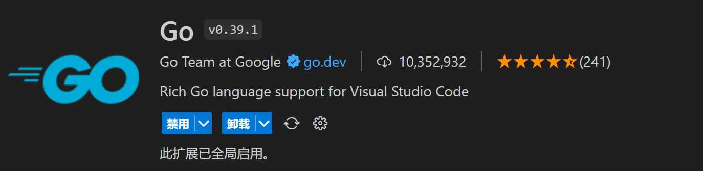
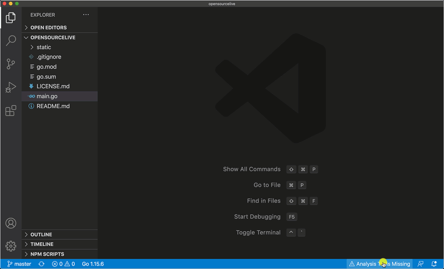
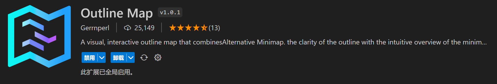

一、Go 下载安装
官网：https://golang.google.cn/dl/，从官网下载对应平台的安装包。
1.1 Windows 安装
下载 go1.20.7.windows-amd64.msi，按照安装向导安装。
>go version
go version go1.20.7 windows/amd64
配置环境变量，添加国内阿里云 go 镜像仓库：GOPROXY = https://mirrors.aliyun.com/goproxy/

可以运行命令查看看 Go 的环境变量。
>go env
set GOMODCACHE=C:\Users\刘李\go\pkg\mod
set GOPATH=C:\Users\刘李\go
set GOPROXY=https://mirrors.aliyun.com/goproxy/
set GOROOT=c:\go
set GOVERSION=go1.20.7
1.2 Linux 安装
下载 go1.20.7.linux-amd64.tar.gz，解压到 /opt 目录。
tar -zxvf go1.20.7.linux-amd64.tar.gz -C /opt/
添加到环境变量 PATH，修改 $HOME/.bashrc 或 /etc/profile
vim ~/.bashrc
# go
export PATH=$PATH:/opt/go/bin
export GOPROXY=https://mirrors.aliyun.com/goproxy/
刷新环境变量生效
source ~/.bashrc
查看 go env
# go env
GOMODCACHE="/root/go/pkg/mod"
GOPATH="/root/go"
GOPROXY="https://mirrors.aliyun.com/goproxy/"
GOROOT="/opt/go"
GOVERSION="go1.20.7"
1.3 Go 环境变量
| 变量名 | 值 |
|---|---|
| GOROOT | GO的安装目录 |
| GOPATH | 第三方依赖包安装路径 |
| GOMODCACHE | 存储第三方依赖包 |
| GOPROXY | 国外站点经常连接失败，建议改为国内镜像站地址 |
二、开发工具安装
2.1 Git
版本管理工具。下载 https://git-scm.com/downloads
2.2 VSCode
微软推出的跨平台、轻量级、插件化、多语言开发 IDE：https://code.visualstudio.com/Download
2.3 VSCode 插件
2.3.1 Go

2.3.2 gopls
gopls（发音Go please）是官方提供的模块，实现语言服务器协议 LSP 的 Language Server，具有构建、 格式化、自动完成等功能。
- 自动安装：在 VSCode 中编辑第一个 xxx.go 文件触发安装。

- 手动安装
go install golang.org/x/tools/gopls@latest
配置：VScode 打开File/Preference/Settings，搜索 gopls，如下例配置
{
"gopls": {
"ui.completion.usePlaceholders": true
}
}
2.3.3 dlv
go-delve 是 Go 语言的调试利器。
- 自动安装
在 VScode 按 F5 启动调试，会触发安装 dlv 的提示。
- 手动安装
go install github.com/go-delve/delve/cmd/dlv@latest
2.3.4 staticcheck
go 的语法检查器，建议安装。（VScode 随着 go pls 一起安装）
go install honnef.co/go/tools/cmd/staticcheck@latest
查看 ~/go/bin，可查看到已安装的可执行文件。
# ll ~/go/bin/
-rwxr-xr-x 1 root root 18040835 8月 25 21:03 dlv
-rwxr-xr-x 1 root root 28056281 8月 25 20:54 gopls
-rwxr-xr-x 1 root root 12972608 8月 25 21:08 staticcheck
2.3.5 Outline Map
该插件可以方便的阅读 Go 代码，尤其是源代码中有大量函数、结构体、接口时。

2.3.6 Golang postfix
该插件可以自动联想补全代码块，提高编程效率。
三、Go 命令
使用 go mod init xxx 初始化一个模块。
# go mod init liuli.com/test
go: creating new go.mod: module liuli.com/test
# cat go.mod
module liuli.com/test
go 1.20
基础 go 程序，main 函数是整个程序的运行入口，必须是 main 包。
vim main.go
程序代码如下：
package main
import "fmt"
func main() {
fmt.Println("hello word!")
}
编译执行 go 程序
# go build main.go
# ls
main main.go
# ./main
hello word!
也可以直接运行 go 文件
# go run main.go
hello word!
3.1 go version
查看 go 版本
3.2 go env
查看 go 环境变量
3.3 go mod
Go Module 工程化模块相关命令。模块化后就可以进行更好的工程管理、依赖管理。
go mod init liuli.com/test 初始化模块目录，产生 go.mod 文件，和 git init 等很类似
go mod tidy 扫描当前模块，从go.mod中移除未使用依赖，添加新的依赖
go mod vendor将项目的第三方包依赖，包括间接依赖，都下载到项目的 vendor 目录中。这样编译时， 找第三方依赖就直接在本项目目录就可以找到了。如果项目依赖发生变化，应该重新执行 go mod verdor。这种方式相当于依赖包跟着项目目录走，除非万不得已不可联网，一般不使用。
3.4 go get
查找依赖包，如果未下载，则下载项目依赖包，添加相关信息到 go.mod 中，文件存储到环境变量 GOMODCACHE指定的目录中（默认GOPATH/pkg/mod）。
-u 下载最新包或有效更新包。默认情况下，本地有包就不下载了。如果网上有最新版，-u 选项会更新本地包。
3.5 go install
除了具备 get 的功能外，如果需要编译包，就执行 go install，并把编译好的可执行文件放到 GOPATH/bin 下。例如：
go install golang.org/x/tools/gopls@latest
3.6 go build
编译 Go 代码，生成可执行文件。-o 指定生成的可执行文件。
go build [-o output] [build flags] [packages]
3.7 go run
编译生成可执行文件并执行。
go run main.go 指定 main 函数所在文件
go run liuli.com/test 去该模块找 main 函数
3.8 go fmt
对代码格式化。已经安装的 gopls 已经支持 gofmt、goimports 等，在 VSCode 中会自动格式化代码，使得代码符合 Go 语言代码风格。
go fmt main.go